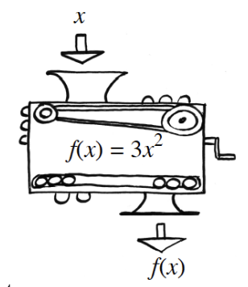

Are the following pairs of expressions equivalent? Explain how you know using at least two different methods.
\(\frac { x ^ { 2 } - 1 } { x ^ { 2 } + 1 }\) and \(-1\)
\(\frac { 3 x + 2 } { x - 1 }\) and \(3+\frac{5}{x-1}\)
Let \(g(x)=x^2-2x\). Evaluate:
\(g(a)\)
\(g(t-2)\)
Rewrite each expression below using the properties of exponents.
\((5a^{-2})^2\)
\((m^{-1}n^{-2})^3\)
\((2x^{-1})^2(2x^0)\)
Factor each binomial.
\(2x^2+5x\)
\(3x^2y^5-9xy^3\)
\(17x^3y-34x^4y^2\)
A linear function includes the points \((2,7)\) and \((4,8)\). What is the average rate of change, \(\frac { \Delta y } { \Delta x }\), between these two points? What will happen to the average rate of change if you choose two other points on the graph of the function?
A function machine is shown at right.
If the input is \(x=-2\), what is the output?
If the input is \(x=10\), what is the output?
If \(27\) is the output, what was the input?
If \(147\\)is the output, what was the input?
If the equation for determining the output from a given input is \(f(x)=3x^2\), what is the equation for determining the input from a given output?

Write the equation of each line in point-slope form.
A line that has a slope of \(5\) and passes through the point \((3,10)\).
A line that has a slope of \(-0.23\) and passes through the point \((0.1,-17)\).